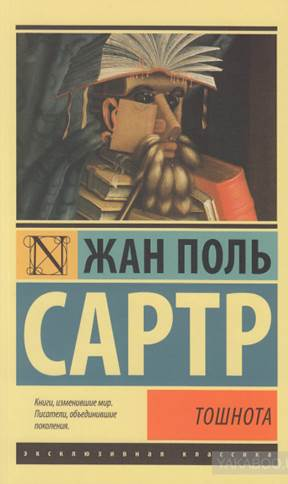

Біографія
Жан-Поль Сартр народився в Парижі і був єдиною дитиною в сім'ї. Його батько Жан-Батист Сартр, офіцер військово-морських сил Франції, мати — Анна-Марія Швейцер. По материнській лінії Жан-Поль був двоюрідним племінником Альберта Швейцера. Жану-Полю було лише 15 місяців, коли у нього помер батько. Родина перебралася до рідної домівки в Медоне.
Освіту Сартр отримав у ліцеї Ла-Рошель, закінчив Вищу нормальну школу (фр. École normale supérieure) у Парижі з дисертацією з філософії, стажувався у Французькому інституті в Берліні (1934). Викладав філософію в різних ліцеях Франції (1929–1939 і 1941–1944); з 1944 року цілком присвятив себе літературній праці. Ще в студентські роки познайомився з Сімоною де Бовуар, що стала не просто супутницею його життя, але ще й автором-однодумцем.
У 1929 році він закінчив Вищу нормальну школу й упродовж 1941–1945 років викладав у різних ліцеях (йому довелося зробити короткочасну перерву у зв'язку із службою в Збройних силах і перебуванням у військовому полоні).
Разом з Сімоною де Бовуар і Морісом Мерло-Понті він заснував журнал «Нові часи». Виступав як прихильник миру на Віденському конгресі народів в 1952 році, в 1953 році був обраний членом Світової ради миру.
У 1956 році Сартр і редакція журналу «Нові часи» дистанціювалися (на відміну від Камю) від прийняття ідеї французького Алжиру і підтримали прагнення до незалежності алжирського народу. Сартр виступає проти катувань, захищає свободу народів визначати свою долю, аналізує насильство як гангрену схожу з колоніалізмом.
Після неодноразових погроз французьких націоналістів ними була двічі підірвана його квартира в центрі Парижа; редакцію «Нових часів» бойовики-націоналісти захоплювали п'ять разів.
Сартр взяв активну участь у Трибуналі Рассела з розслідування військових злочинів, скоєних у В'єтнамі. У 1967 році Міжнародний трибунал з розслідування військових злочинів провів два своїх засідання — у Стокгольмі і в Роськилде, де Сартр виголосив свою гучну промову про геноцид, в тому числі в французькому Алжирі.
Сартр був учасником революції у Франції 1968 (можна навіть сказати, що Сартр став символом революції: бунтівні студенти, захопивши Сорбонну, впустили всередину тільки Сартра), в повоєнні роки — численних демократичних, маоїстських рухів і організацій. Брав участь у протестах проти Алжирської війни, придушення Угорського повстання 1956, В'єтнамської війни, проти вторгнення американських військ на Кубу, проти введення радянських військ до Праги, проти придушення інакомислення в СРСР. Протягом життя його політичні позиції досить сильно коливалися, але завжди залишалися лівими, і Сартр завжди відстоював права знедоленої людини, того самого приниженого «Самоучки», якщо цитувати роман «Нудота».
У 1964 році Жан-Поль Сартр став лауреатом Нобелівської премії (література). Але він відмовився прийняти цю нагороду, заявивши про своє небажання бути чим-небуть зобов'язаним будь-якій соціальній інституції. У тому ж році Сартр заявив про свою відмову від літературної діяльності, назвав літературу сурогатом дійсного перетворення світу.
Жан-Поль Сартр помер у 1980 році, і в останню путь його проводжали 50 тисяч людей.
Одним з центральних понять для всієї філософії Сартра є поняття свободи.
У Сартра свобода представлялася як щось абсолютне, раз і назавжди дане («людина засуджена бути вільною»). Вона передує сутності людини. Сартр розуміє свободу не як свободу духу, провідну до бездіяльності, а як свободу вибору, яку ніхто не може відняти у людини: в'язень вільний прийняти рішення — змиритися чи боротися за своє визволення, а що буде далі — залежить від обставин, що знаходяться поза компетенцією філософа.
Концепція свободи волі розгортається у Сартра в теорії «проекту», згідно з якою індивід не заданий самому собі, а проектує, «збирає» себе як такого. Тим самим, він повністю відповідає за себе і за свої вчинки. Для характеристики позиції Сартра підходить ним самим наведена в статті «Екзистенціалізм — це гуманізм».
«Екзистенція» і є постійно живий момент діяльності, взятий суб'єктивно. Цим поняттям позначається не стійка субстанція, а постійна втрата рівноваги. У «Нудоті» Сартр показує, що світ не має сенсу, «Я» не має мети. Через акт свідомості і вибору «Я» надає світу значення і цінності.
Саме людська діяльність надає сенсу навколишньому світу. Предмети — це знаки індивідуальних людських значень. Поза цим вони — просто даність, пасивні та інертні обставини. Надаючи їм того чи іншого індивідуально-людського значення, сенсу, людина формує себе як так чи інакше окреслена індивідуальність.
У розумінні Сартра діалектика можлива у двох формах — «критичній» і «догматичній». Першою є «негативна» діалектика, що тлумачиться з точки зору філософії екзистенціалізму (філософії існування), друга — «консервативна», «догматична», «недостатньо революційна» марксистська діалектика.
Догматизм виходить з незмінних, раз і назавжди даних формул, знань, котрі не можуть збагачуватися в процесі розвитку пізнання. Раз є певна істина, то вона, згідно з догматизмом, правильна для будь-якого випадку, для будь-яких умов розвитку. Поділяючи знання на правильні і неправильні, догматизм намагається закріпити це назавжди і, таким чином, фактично веде до оманливості. Догматизм, перебільшуючи значення певних сторін істини, не визнає нових якісних моментів, що виникають у процесі пізнання, не враховує конкретності істини, абсолютизує її, і в цьому відношенні, змикаючись з метафізикою, є антиподом діалектики, однак, тільки в певному її значенні — як теорії пізнання.
З поняттям свободи в Сартра пов'язане поняття «відчуження».
Сучасного індивіда Сартр розуміє як відчужену істоту: його індивідуальність стандартизована (як стандартизований офіціант з професійною посмішкою і точно розрахованими рухами); підпорядкована різним соціальним інститутам, які наче «стоять» над людиною, а не походять від неї (наприклад, держава, яка представляє відчужений феномен — відчуження у індивіда здатності брати участь у спільному управлінні справами), а отже, позбавлена найважливішого — здатності творити свою історію.
Відчужена від себе людина має проблеми з матеріальними предметами — вони тиснуть на неї своїм нав'язливим існуванням, своєю в'язкою і солідно-нерухомою присутністю, викликаючи «нудоту» (нудота Антуана Рокантена в однойменному творі). На противагу цьому Сартр стверджує особливі, безпосередні, цілісні людські стосунки
У своїх ранніх філософських працях Сартр зосереджується на емоціях, уяві та природі особистості; ці ж проблеми він розглядає й у своєму першому романі «Нудота» («La Nausée», 1938), у якому показує свою глибинну відразу до буржуазного суспільства. Життю властива по-сартрівськи принципова «відкритість» і воно потребує певної завершеності. Антуан Рокантен, герой роману, який нічого не писав, окрім історичних нарисів і щоденника у фіналі роману вирішив написати книжку, створити роман: «Так. Книжку. Спочатку, звісно буде нудна, втомлива праця, яка не увільнить мене ні від існування, ні од відчуття, що я існую. Але настане така мить, коли книжку буде завершено, все буде позаду, і тоді трохи ясного світла проллється на моє минуле. І, може, в цьому світлі я дивитимусь на своє життя без відрази й огиди… і в минулому — лише в минулому — я прийму себе як блудного сина».
У своїй основній теоретичній праці з проблем політики «Критика діалектичного розуму» («Critique de la raison dialectique», 1960) він спробував поєднати екзистенціалізм з марксизмом. У «Критиці діалектичного розуму» Сартр зосереджується на одному рівні — рівні філософії історії. Він пропонує модель діалектичного розуму, в межах якого волю кожного індивіда слід розглядати як складник тотальної історії. Блиск Сартрової оцінки індивідів затьмарює цю вищу мету, повне виправдання якої було залишено для іншого тому (котрий, знову ж таки, так і не з'явився). Але другий рівень трактату ще раз демонструє справжнє лице Сартра як мораліста. Він різко протиставляє людських істот, що потрапляють до певних «категорій» і до «згуртованих груп».
Одним із провідних творів Жан-Поля Сартра є "Нудота" - роман, який був написаний у 1938 році, під час перебування Сартра в Гаврі. Деякі критики називають «Нудоту» найкращим романом письменника.
Теми, які піднімає автор, типові для філософії існування — абсурд людського життя, почуття страху, відчаю, безвиході. Сартр підкреслює значення свободи і пов'язані з нею труднощі існування. Протагоніст роману намагається знайти Істину, зрозуміти навколишній світ. Абсурд, насамперед, розуміється як усвідомлення безглуздя та ірраціональності життя[1]. М. А. Киссель у роботі «Філософська еволюція Ж. П. Сартра» описував зав'язку роману так: «Герою роману несподівано відкривається огидна картина оголеного буття, позбавленого покривів, якими зазвичай приховані сприймані речі. Вражений герой раптово усвідомлює, що чисте буття — це не абстракція мислення, а щось на зразок клейкої пасти, що заполонила собою весь простір, щойно наповнений світлом і фарбами і раптом з'явилося в зовсім іншому вигляді…»
«Нудота» постає перед читачем у вигляді щоденника Антуана Рокантена. Мета щоденника — «докопатися до суті». Антуан описує як на нього час від часу находить відчуття «Нудоти». «Так ось що таке Нудота, отже, вона і є ця дійсність яка б'є по очах. А я то ламав собі голову! І писав про неї казна-що! Тепер я знаю: я існую, світ існує, і я знаю, що світ існує. От і все. Але мені це байдуже. Дивно, що все мені настільки байдуже, мене це лякає. А розпочалося це з того злощасного дня, коли я хотів кинути у воду гальку. Я вже зібрався жбурнути камінь, подивився на нього, і тут-то все і розпочалося: я відчув, що він існує. Після цього Нудота повторилася ще кілька разів: час від часу предмети починають існувати в твоїй руці»[3]. Також він зауважує: «Нудота не в мені, я відчуваю її там на цій стіні, на цих підтяжках, усюди навколо мене. Вона становить одне ціле з оцим кафе, а я всередині неї». «Раз відкривши цей „божевільний, божевільний світ“, Рокантен вже не може ніде і ні в чому знайти точку опори, все втратило звичні обриси і виявило новий вимір… Підґрунтям такого почуття є, звичайно, естетична чуйність до потворного — зворотний бік потягу до прекрасного…», — пише М. А. Киссель.
Головний герой часто уважно спостерігає за людьми, за натовпом, але ці спостереження можна порівняти з спостереженнями за тваринами — Антуан ніби навіть не вважає себе людиною, і вже точно не частиною натовпу. Більшість людей викликають в нього відчуття зневаги. «Люди, людей потрібно любити, люди достойні захоплення. Зараз мене виверне назовні…». Однак на існування людей він дивиться з жалістю, воно для нього таке ж порожнє, як і його власне життя. Герой майже не спілкується з людьми і сильно страждає від цього. Але попри це він не шукає товариства людей, навпаки, свідомо уникає його. У цьому можна побачити один з парадоксів роману. Щоправда іноді Антуан бачить у натовпі таких же, як він, «що розуміють», однак, «ми нічим допомогти один одному не можемо...».
Трапляється що і в житті Рокантена настають світлі періоди, іноді він навіть почуває себе щасливим. Але ці моменти рідкісні — отже, щастя дуже складно досягти.
За Кисселем, герої Сартра «відкидають будь-яке готове рішення, всілякий автоматизм вчинків, санкціонованих ззовні, встановлених панівним кодексом соціальної моралі. Вони ненавидять тупу, самовдоволену буржуазію, якій ніколи і в голову не приходило сумніватися у своєму праві збирати гроші, ростити черево і увіковічнювати лискучі свої фізіономії у повчання нащадкам».
Розмірковуючи, Антуан приходить до висновку, що його існування не просто абсурдне, а що він — «зайвий». "Мені хочеться піти, відправитись туди, де я справді опинюся на своєму місці, на місці, де я буду доречним… Але такого місця немає ніде, я зайвий " — зауважує Рокантен. І не лише він, а і всі оточуючі його предмети також зайві. Ця думка приводить героя до ідеї самогубства. Втім, він знаходить «рятівний вихід» «Я смутно мріяв про своє знищення, щоб ліквідувати принаймні одну з зайвих экзистенцій. Але моя смерть була б зайвою. Зайвим був би мій труп, зайвою — моя кров на цих каменях, серед цих рослин… я був зайвим для вічності» — записує Антуан в свій щоденник.
Ближче до кінця роману Рокантен, як йому здається, знаходить рішення. Він побачив його у творчості. «Творити — ось велике звільнення від страждань і засіб полегшити життя» — говорив Заратустра Ніцше. Для цьoго Рокантен вирішує написати книгу, справжню книгу, здатну зробити його існування виправданим і потрібним, він напише історію, яка «повинна бути прекрасною і твердою, як сталь, такою, щоб люди засоромилися свого існування».